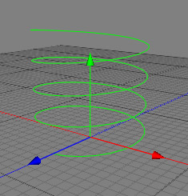

The helix is a parametric spline object which creates a 3 dimensional spline with the shape of a helix. The main purpose of the helix object is to model springs in conjunction with the sweep object.

Properties
Radius beginning: Specifies the radius at the beginning of the helix.
Angle beginning: Specifies the angle at the beginning of the helix.
Radius end: Specifies the radius at the end of the helix.
Angle end: Defines the angle at the end of the helix.
Height: Specifies the height (length) of the helix.
Sections: Specifies the number of path elements which build up the helix. More sections create a smoother spline.
Orientation: Specifies the axis around which the helix is wound.